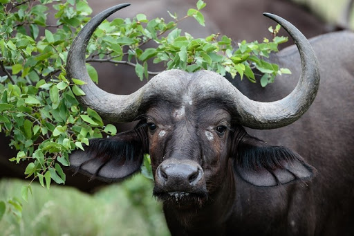

|

|
Hi and welcome to my website! My name is Anna (as you can probably tell). I currently attend Preston Middle School. I dance mainly ballet, but also take classes on lyrical, jazz, and hip-hop. I play the piano and am currently on Level 3 of the Bastien Piano Library. My favorite colors are purple, blue, pink and teal and my favorite animasl are the bottlenose dolphin, frogs and the Cocker Spaniel (a breed of dogs). As you can probably tell, I LOVE CUPCAKES!
You can visit me on my blog, and I hope you have fun on my website!
|